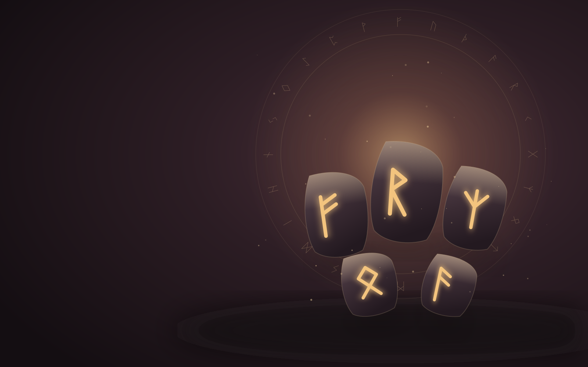

Практики,которые возвращают к себе
Выберите пространство, в котором можно услышать себя яснее: через родовую тему, огонь, символы, телесность или личный разговор.
Екатерина Белая
Я не блогер. Я человек дела. Мне важны глубина, семейственность, традиция и настоящее присутствие в работе.
Веду камерные индивидуальные и групповые форматы, соединяя работу с огнём, символами, родовой темой и внимательным личным сопровождением.
Выберите свой вход
Не каталог услуг, а девять разных входов в работу. Выберите по тому, что откликается именно сейчас.
Связь с Родом
Три месяца спокойной глубокой работы, чтобы перестать ходить по кругу и собрать собственную опору.
↗Мистерия «Сила Рода»
Камерный женский круг с огнём, солью, воском и ритмом — для перезагрузки, тишины и внутренней собранности.
↗Игра «Сила Рода»
Живой игровой маршрут, который помогает увидеть сценарий, ресурс и следующий шаг без тяжёлого разбора.
↗
Подношения духам предков
Персонально согласованный ритуал благодарности и памяти — без мрачности, давления и шаблонного сценария.
↗
Свечные практики
От материала к практике: воск, фитиль, форма, безопасность и осмысленная работа с живым огнём.
↗
Карты Таро
Не заучивать трактовки, а понимать систему: структура колоды, язык символов и логика расклада.
↗
Руны
Старший и Младший футарк: история знаков, практика и проверка знаний — в своём темпе и с куратором.
↗Огненный массаж
Индивидуальный телесный формат тепла и расслабления — только после обсуждения безопасности и противопоказаний.
↗Индивидуальные консультации
Самая простая точка входа: разобрать запрос, вернуть ясность и понять, нужен ли следующий шаг вообще.
↗Выберите по своему запросу
Не выбирайте «правильную услугу». Выберите состояние или задачу, с которой хотите разобраться.
Индивидуальная консультация
Спокойно разложить запрос по полочкам и понять следующий шаг.
Связь с Родом
Последовательное индивидуальное сопровождение на протяжении трёх месяцев.
Мистерия «Сила Рода»
Камерный круг с огнём, солью, воском, бубном и символическим артефактом.
Свечные практики
Материал, техника, безопасность и осознанная работа с огнём.
Карты Таро
Понимание структуры колоды, языка образов и практики раскладов.
Руны
Старший и Младший футарк — от истории к собственной практике.
Подношения духам предков
Персонально согласованная церемониальная практика.
Огненный массаж
Только индивидуально и после предварительного обсуждения условий и противопоказаний.
Форматы
Можно начать с одной встречи или выбрать более глубокий маршрут.
Вопросы и ответы
Если ответа нет — оставьте запрос, и обсудим лично.
Начните с того, что сейчас важно
Коротко опишите запрос — и я помогу понять, какой формат уместен, а какой сейчас не нужен.